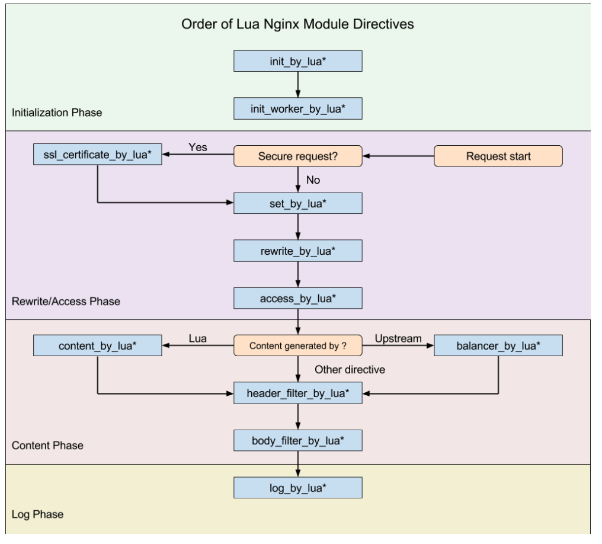

最近在做灰度升级，记录一下OpenResty 做api gateway的一些知识
OpenResty: 是基于Nginx与Lua的高性能Web平台，带有很多优秀的Lua库，可以做动态服务网关。
OpenResty:设计哲学：对于不同的阶段，进行相应的不同的处理
Nginx的请求处理阶段有11，其中最重要的也是最常见的3个阶段依次为rewrite, access,content.
下图为Lua Nginx Module指令的执行顺序图，可以根据具体的业务场景设置不同的lua脚本。几个重要的部分：
init_by_lua init_by_lua_block: 运行在Nginx loading-config 阶段，注册Nginx Lua全局变量，和一些预加载模块。是Nginx master进程在加载Nginx配置时执行。init_worker_by_lua: 在Nginx starting-worker阶段，即每个nginx worker启动时会调用，通常用来hook worker进程，并创建worker进行的计时器，用来健康检查，或者设置熔断记时窗口等等。access_by_lua: 在access tail阶段，用来对每次请求做访问控制，权限校验等等，能拿到很多相关变量。例如：请求体中的值，header中的值，可以将值添加到ngx.ctx, 在其他模块进行相应的控制balancer_by_lua: 通过Lua设置不同的负载均衡策略, 具体可以参考lua-resty-balancercontent_by_lua: 在content阶段，即content handler的角色，即对于每个api请求进行处理，注意不能与proxy_pass放在同一个location下proxy_pass: 真正发送请求的一部分, 通常介于access_by_lua和log_by_lua之间header_filter_by_lua:在output-header-filter阶段，通常用来重新响应头部，设置cookie等，也可以用来作熔断触发标记body_filter_by_lua:对于响应体的content进行过滤处理log_by_lua:记录日志即，记录一下整个请求的耗时，状态码等
ngx.var.<arg>, lua使用nginx内置的绑定变量. ngx.var.remote_addr为获取远程的地址，ngx.var.http_cookie获取cookie信息ngx.ctx: 每次请求的上下文，可以在ctx里记录，每次请求上下文的一些信息，例如：request_id, access_key等等upstream 块里的的balancer_by_lua_file, 使用ngx.balancer模块，可以实现不同的负载均衡策略，并调用set_current_peer函数设置当前query调用的backendngx.shared.DICT dict = ngx.shared[name_var] : 获取共享内存的lua dict. 且shared.DICT在当前nginx server实例中被所有nginx worker进程共享。ngx.shared.DICT当到达定义的大小限制时，再次调用set操作，会使用LRU淘汰一些key。set操作会返回三个值(success, err, forcible). ngx.shared.DICT支持过期操作，expire等等resty.lock库进行加速控制lua_package_path: lua扩展的库的地址, ;;为设置默认的路径lua_package_cpath: Lua 扩展c 的so库地址, ;;为设置默认的路径# set search paths for pure Lua external libraries (';;' is the default path): lua_package_path '/foo/bar/?.lua;/blah/?.lua;;'; # set search paths for Lua external libraries written in C (can also use ';;'): lua_package_cpath '/bar/baz/?.so;/blah/blah/?.so;;'; server { location /lua_content { # MIME type determined by default_type: default_type 'text/plain'; content_by_lua_block { ngx.say('Hello,world!') } } location /nginx_var { # MIME type determined by default_type: default_type 'text/plain'; # try access /nginx_var?a=hello,world content_by_lua_block { ngx.say(ngx.var.arg_a) } } location = /request_body { client_max_body_size 50k; client_body_buffer_size 50k; content_by_lua_block { ngx.req.read_body() -- explicitly read the req body local data = ngx.req.get_body_data() if data then ngx.say("body data:") ngx.print(data) return end -- body may get buffered in a temp file: local file = ngx.req.get_body_file() if file then ngx.say("body is in file ", file) else ngx.say("no body found") end } } # transparent non-blocking I/O in Lua via subrequests # (well, a better way is to use cosockets) location = /lua { # MIME type determined by default_type: default_type 'text/plain'; content_by_lua_block { local res = ngx.location.capture("/some_other_location") if res then ngx.say("status: ", res.status) ngx.say("body:") ngx.print(res.body) end } } location = /foo { rewrite_by_lua_block { res = ngx.location.capture("/memc", { args = { cmd = "incr", key = ngx.var.uri } } ) } proxy_pass http://blah.blah.com; } location = /mixed { rewrite_by_lua_file /path/to/rewrite.lua; access_by_lua_file /path/to/access.lua; content_by_lua_file /path/to/content.lua; } # use nginx var in code path # CAUTION: contents in nginx var must be carefully filtered, # otherwise there'll be great security risk! location ~ ^/app/([-_a-zA-Z0-9/]+) { set $path $1; content_by_lua_file /path/to/lua/app/root/$path.lua; } location / { client_max_body_size 100k; client_body_buffer_size 100k; access_by_lua_block { -- check the client IP address is in our black list if ngx.var.remote_addr == "132.5.72.3" then ngx.exit(ngx.HTTP_FORBIDDEN) end -- check if the URI contains bad words if ngx.var.uri and string.match(ngx.var.request_body, "evil") then return ngx.redirect("/terms_of_use.html") end -- tests passed } # proxy_pass/fastcgi_pass/etc settings } }